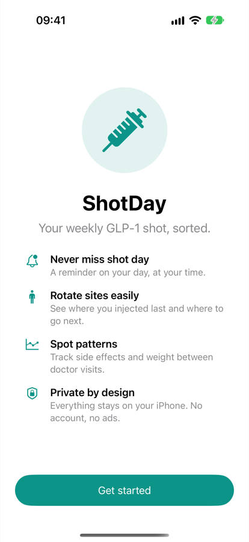
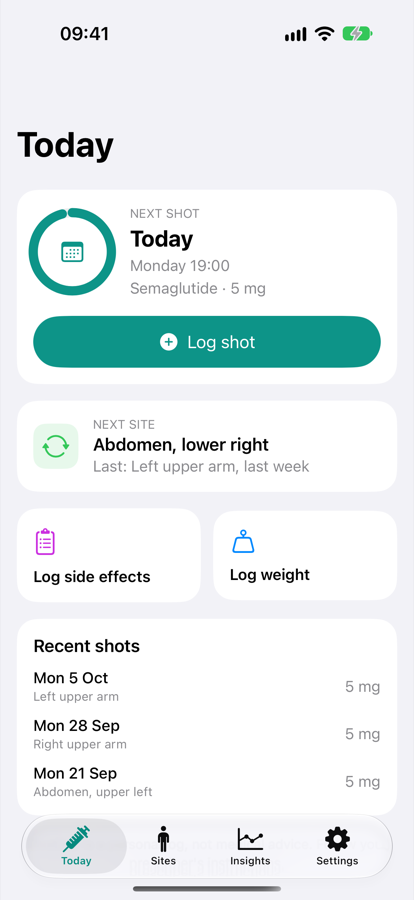
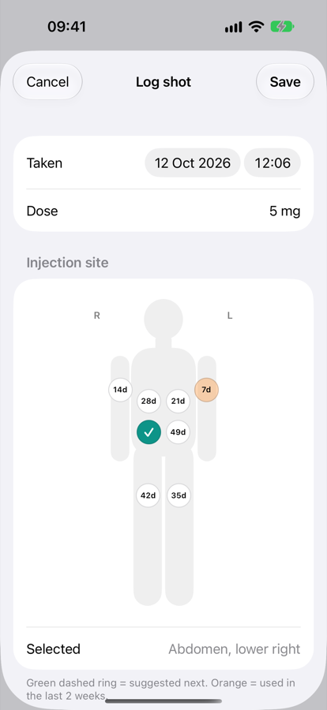
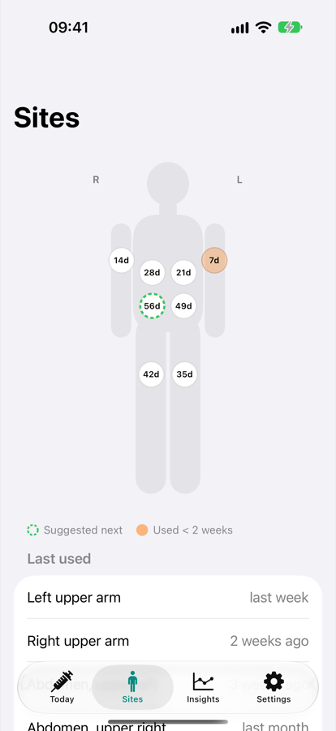
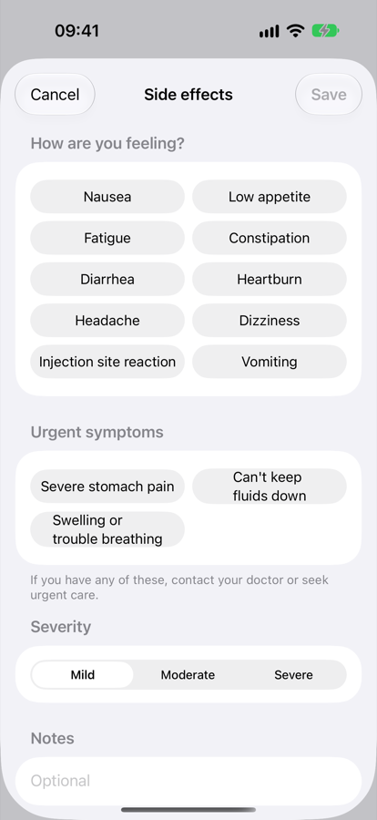
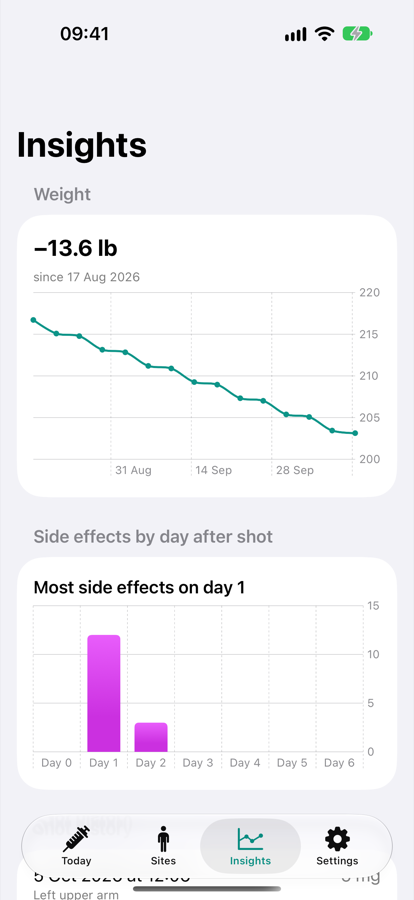
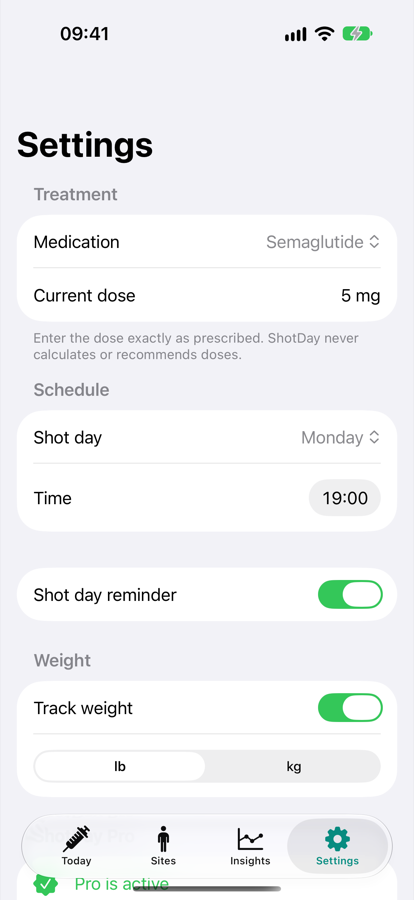

It never calculates, recommends or changes doses. Always follow your prescriber's instructions. If you feel very unwell, contact your doctor or emergency services.
Set up your treatment
When you first open ShotDay, tap Get started and fill in:
| Setting | What to enter |
|---|---|
| Medication | Semaglutide (e.g. Ozempic, Wegovy), Tirzepatide (e.g. Mounjaro, Zepbound) or Other GLP-1. |
| Current dose | Exactly as prescribed, e.g. 2.5 mg. It's a label for your records; ShotDay doesn't calculate anything from it. |
| Shot day | The day of the week you inject. |
| Time | When you usually inject. Your reminder goes off at this time. |
| Reminder | Leave on to get a notification every week. |
Switch on the acknowledgement that ShotDay is a log, not medical advice, then tap Start tracking. The button stays greyed out until you've entered a dose and switched on the acknowledgement.
If you turned reminders on, iOS asks whether ShotDay can send notifications. Tap Allow so you don't miss shot day.

Everything for this week, on one screen
Next shot
Shows how long until your next shot, and the ring fills up through the week.
- Today, Tomorrow or In 3 days: your next scheduled shot.
- Time for your shot (orange): it's shot day and you haven't logged this week's shot yet.
A shot taken up to two days early or late still counts for that week.
Next site
The injection site ShotDay suggests next (the one you've used least recently), and where you injected last time.
Quick logs and recent shots
Log side effects and Log weight open their loggers. The weight button only shows if weight tracking is on. Recent shots lists your last three, with date, site and dose.

Log a shot in a few taps
- Tap Log shot on the Today screen.
- Taken is set to now. Change it if you're logging a shot from earlier.
- Dose is filled in with your current dose. If your prescriber changed it, edit it here and ShotDay remembers the new dose.
- Choose the injection site on the body map. The suggested site is already selected.
- Add notes if you like, then tap Save.
Reading the body map
The figure faces you, like looking at another person, so their right side is on your left. The small R and L labels show which side is which.
There are 8 sites: four on the abdomen (upper and lower, left and right), the front of each thigh, and each upper arm. Use only the sites your prescriber has approved for you.

See where to inject next
The Sites tab shows the body map with all your sites, plus every site and when you last used it, most recent first. The suggested next site is marked Next.
ShotDay always suggests the site you've used least recently, and sites you've never used come first. Rotating sites helps reduce irritation and lumps under the skin.

Log how you feel
- Tap Log side effects on the Today screen.
- Tap every symptom you have. Tap again to deselect.
- Choose a severity: Mild, Moderate or Severe.
- Add notes if you like, then tap Save.
If you log any of these, or choose Severe, ShotDay reminds you to contact your doctor, and to call emergency services if you have severe stomach pain that won't go away, can't keep fluids down, or have swelling of the face or throat or trouble breathing.
Get help first, log it later. ShotDay can't judge how serious a symptom is and doesn't alert anyone for you.

Track your weight, if you want to
- Tap Log weight on the Today screen.
- Enter your weight in the units shown (lb or kg; change units in Settings).
- Change the date if needed, then tap Save.
Weight tracking is optional. Turn off Track weight in Settings and the weight button and chart disappear.
Spot patterns between doctor visits
- Weight (Pro): a chart of your weight over time, with the total change since your first entry.
- Side effects by day after shot (Pro): your symptoms counted by how many days after a shot they happened (Day 0 is shot day), e.g. "Most side effects on day 1". This can help you and your doctor plan around your hardest days.
- Shot history (free): every shot you've logged, newest first.
To delete a shot, for example one you logged twice, swipe left on it in Shot history and tap Delete. This can't be undone.
Without Pro, the charts show a blurred sample. Your own data appears as soon as you unlock Pro.

Never miss shot day
With reminders on, you get a notification at your shot time on your shot day, every week, whether or not you've logged a shot yet.
- Turn reminders on or off in Settings → Shot day reminder.
- Changing your shot day or time in Settings updates the reminder automatically.
Open the iPhone Settings app → Notifications → ShotDay and make sure notifications are allowed. If permission was denied, ShotDay shows a red note under the reminder switch.
Change your treatment or preferences
| Section | What you can do |
|---|---|
| Treatment | Change medication and current dose. |
| Schedule | Change your shot day and time. |
| Reminder | Turn the weekly notification on or off. |
| Weight | Turn weight tracking on or off; switch between lb and kg. Existing entries convert automatically. |
| ShotDay Pro | Unlock Pro, share your doctor summary or manage your subscription. |
| Privacy & safety | How your data is stored and what ShotDay does and doesn't do. |

What Pro adds
Logging shots, site rotation, side effects, weight and reminders are free forever. Pro adds weight trend charts, side-effect patterns by day, and a summary to share with your doctor.
Prices may vary by country. The free trial is for new subscribers.
- Cancel anytime in the iPhone Settings app → your name → Subscriptions → ShotDay, or from Settings → ShotDay Pro → Manage subscription. Cancel at least 24 hours before your trial or billing period ends to avoid being charged.
- New phone or reinstalled? Open the Pro screen and tap Restore Purchases.
Share a summary with your doctor
With Pro, go to Settings → Share summary with your doctor. ShotDay creates a plain-text summary with:
- Your medication, current dose (as you entered it) and shot day
- Your last 12 shots, with date, dose and site
- Your weight change, if you track weight
- Your side effects from the last 30 days, and how often each happened
Send it by Messages, Mail or AirDrop, or save it to Notes or Files. Nothing leaves your phone until you choose where to share it.
Your data stays on your iPhone
- ShotDay has no account, no servers, no ads and no tracking.
- Your data is part of your normal iPhone backup (iCloud or computer), so it comes back if you restore your phone from a backup.
- Deleting the app deletes all your ShotDay data. Share a summary first if you want a copy.
- ShotDay doesn't currently read from or write to Apple Health.
Troubleshooting and FAQ
It says "Time for your shot" but I already took it.
Log it with Log shot. If you took it earlier, change the Taken date and time. A shot within two days of your scheduled day counts for that week.
I took my shot on a different day this week.
That's fine. Log it with the right date. To change your regular day, update Shot day in Settings.
I logged a shot by mistake.
Go to Insights → Shot history, swipe left on the shot, and tap Delete.
My dose changed.
Update Current dose in Settings, or edit the dose when you log your next shot. Past shots keep the dose they were logged with.
Can ShotDay tell me what dose to take, or convert mg to units?
No. ShotDay never calculates or suggests doses, because a wrong dose can be dangerous. Use the dose and instructions from your prescriber and pharmacist.
The Pro screen says "Subscription Unavailable."
Check your internet connection and that you're signed in to the App Store, then try again.
Can I use ShotDay for a daily medication?
ShotDay is built for once-weekly injections. Daily medications aren't supported yet.
Privacy policy · Terms of use · Support
ShotDay is a personal tracking tool and does not provide medical advice, diagnosis or treatment. Medication names are trademarks of their respective owners and are used only to help you identify your medication. Screenshots show sample data.